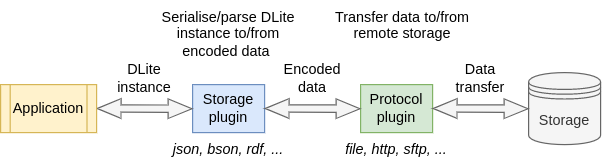

The DLite plugin system#
Content#
Introduction#
DLite is a lightweight data-centric framework for semantic interoperability. Its plugin system is what makes DLite useful in practice: it connects the in-memory representation of instances to the outside world.
Interoperability involves three distinct concerns, which DLite separates into three plugin families:
Serialisation/parsing of instances to/from a data representation (a format). Handled by storage plugins (aka drivers).
Transfer of raw data to/from an external resource (a location). Handled by protocol plugins.
Conversion between instances of different metadata. Handled by mapping plugins.
In addition, datamodels and code generation templates are found via search paths, as described in Search paths.
The three plugin families#
Storage plugins (drivers) and protocol plugins are orthogonal and can be mixed freely: a yaml storage plugin can be combined with the file, http or sftp protocols to read a YAML document from a file, a website or a SFTP server, respectively.
This separation of concerns reduces the number of plugins that has to be written from N formats × M transports to N + M plugins.

A storage plugin (driver) parses a byte sequence into instances and serialises instances back to bytes. Examples:
json,yaml,csv,hdf5,postgresql.A [protocol plugin] moves raw bytes to/from an external resource. Examples:
file,http,sftp,zip.A [mapping plugin] converts instances of one metadata into instances of another metadata.
The Python interface to all of this is simple. To load an instance from
a YAML file available on the web, combine the http protocol with the
yaml driver:
>>> url = "https://raw.githubusercontent.com/SINTEF/dlite/refs/heads/master/storages/python/tests-python/input/test_meta.yaml"
>>> inst = dlite.Instance.load(protocol="http", driver="yaml", location=url)
To save an instance to a file, the protocol can be omitted (it defaults
to the file protocol):
>>> inst.save("yaml", "inst.yaml", "mode=w")
Language layering#
The DLite core is written in C. Plugins may be written in either C or
Python, and are used identically from the outside: dlite.Storage("yaml", ...)
works the same whether the yaml driver is implemented in C or Python.
This is achieved with a C plugin that bridges the Python plugin system into the C plugin system. It loads Python plugin modules and exposes them as C plugins via the same plugin API.
Plugins written in C are shared libraries that define a function returning a struct with function pointers (see the C reference manual for details). Plugins written in Python are modules with a class subclassing one of the plugin base classes:
Plugin family |
Python base class |
See |
|---|---|---|
Storage |
|
|
Mapping |
|
|
Protocol |
|
Plugin lifecycle#
Plugins are discovered from the plugin search paths and loaded lazily, the first time they are needed. When DLite looks up a driver by name, it:
Checks the already registered plugins.
Searches the plugin search path for a shared library or Python module matching the given name, loads it and registers it.
As a last resort, scans all plugins in the search path.
Consequences worth knowing about:
Plugin iterators only expose already loaded plugins. E.g. iterating over
dlite.StoragePluginIter()before opening any storage yields an empty iterator.Plugins are cached. If you modify a plugin module, you may have to reload it or restart your Python session.
Note
Since DLite v0.5.23, Python plugins are evaluated in separate scopes. Before v0.5.23 all plugins were executed in the same scope, which could lead to confusing bugs due to interference between plugins.
Each plugin module has its own namespace, available as
dlite._plugindict[<module_name>]. A plugin module must import dlite
itself and refer to the base class by its qualified name
(dlite.DLiteStorageBase), since only names assigned within the plugin
module are visible to it.
Making plugins available#
There are three ways to make new plugins available to DLite:
Environment variables, e.g.:
export DLITE_PYTHON_STORAGE_PLUGIN_DIRS=/path/to/my_plugins
Python path variables, e.g.:
import dlite dlite.python_storage_plugin_path.append("/path/to/my_plugins")
Entry points in the
dlite.pathsgroup, for distributing plugins with your Python package (see Search paths).
The full list of search paths, their corresponding environment variables and Python path variables is documented in Search paths.
Generic and specific plugins#
Storage plugins can be categorised as either generic or specific:
A generic storage plugin can store and retrieve any type of instance and metadata. Examples:
json,yaml,csv,hdf5,postgresql,mongodb.A specific storage plugin deals with specific instances of one type of entity, such as the shipped
BlobandImageplugins, that load and save instances ofhttp://onto-ns.com/meta/0.1/Blobandhttp://onto-ns.com/meta/0.1/Image, respectively. Writing a specific plugin is often the simplest way to connect an instrument or legacy data format to DLite (see the storage plugin example).
A complete reference of all plugins that ship with DLite is available in the plugin reference.